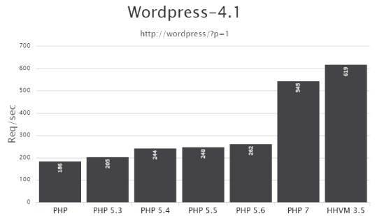

Синтаксис PHP 5.3, 5.4, 5.5, 5.6, 7 — что нового?
В этой статье я рассмотрю интересные моменты в развитии синтаксиса PHP - получится своего рода список изменений PHP. Что появилось в версиях PHP 5.3 и выше. Основная цель этой статьи создать некую карту изменений синтаксиса, что можно было быстро освежить в памяти «фишки» синтаксиса PHP, которые упрощают коддинг. У меня в последнее время частенько возникает необходимость убедиться, что можно в PHP 5.3, а чего нельзя.
При написании плагинов или тем WordPress можно использовать только возможности PHP 5.3, выше пожалуй не стоит... Все что можно в PHP 5.4 и выше, нужно решать через создание вспомогательных переменных. Впрочем, даже 5.3 не всегда работает, есть еще серверы с PHP 5.2, но хорошо что это редкость. К слову, сам WordPress еще поддерживает PHP 5.2.
Итак, к новинкам...
$str1{0} — синтаксис получения символа строки
Новый синтаксис обращения к символам строки:
// получение символа
$str = 'abc';
echo $str{0}; //> a
echo $str{1}; //> b
echo 'abc'{1}; //> b
// установка символа
$str1 = $str2 = 'ff';
$str1{0} = 'a';
echo $str1; //> af
$str2[0] = 'a'; // этот синтаксис не рекомендуется
echo $str2; //> af
$str2[0] не рекомендуется, хотя и работает точно также. Рекомендация использовать фигурные скобки {} связана с тем, чтобы при прочтении кода было сразу понятно, что обрабатывается строка, а не элемент массива. Как мы знаем квадратными скобками в PHP принято обозначать массивы, а не строки.
PHP 5.3
В PHP 5.3, как и во всей пятой ветке PHP, включена новая машина-интерпретатор скриптов Zend Engine 2.0. Благодаря этому PHP стал работать быстрее примерно на 15-20%.
Новые возможности в PHP 5.3 (ссылка на офф. сайт):
?: — сокращение тернарного оператора
С PHP 5.3 стало возможным не писать среднюю часть тернарного оператора. Выражение expr1 ?: expr3 возвращает expr1 если expr1 не пустой, и expr3 в противном случае.
Тернарный — состоящий из трёх частей, компонентов.
$a = $expr1 ?: $expr3;
// равносильно записи:
$a = $expr1 ? $expr1 : $expr3;
Пример тернарного оператора:
// полная запись
if ( $a > 100 )
$result = "Больше";
else
$result = "Меньше";
// краткая запись
$result = $a > 100 ? "Больше" : "Меньше";
В короткой записи есть еще момент производительности, например:
// полная запись
if ( get_post_meta(25, 'meta_key', 1) )
echo esc_html( get_post_meta(25, 'meta_key', 1) );
else
echo 'Мета поля нет';
// краткая запись
echo esc_html( get_post_meta(25, 'meta_key', 1) ?: 'Мета поля нет' );
В полной записи функция get_post_meta() вызывается 2 раза. В короткой один раз, и если она что-то вернула, второму аргументу сразу передается полученное значение: не нужны дополнительные переменные...
$func = function(){}; — анонимные (лямбда) функции
Лямбда-функции еще называют «анонимными функциями», потому что для них не указывается название.
Лямбда-функции представляют собой замыкание (англ. closure) — это особый вид функции, которая определена в теле другой функции и создаётся каждый раз во время её выполнения. Синтаксически это выглядит как функция, находящаяся целиком в теле другой функции. Насколько я понял, любая функция — это замыкание текущего контекста, т.е. контекст не будет очищен пока работает функция. Но если в функции есть лямбда-функция, то она становится замыканием, и если в неё передаются переменные из «верхней» функции, то они не будут очищены, до тех пор пока работает вложенная-функция, даже если «верхняя» функция работу закончила...
В ранних версиях, анонимные функции создавались с помощью функции create_function().
Пример создания анонимной функции для сортировки usort():
$arr = array(3, 2, 5, 6, 1);
usort( $arr, function($a, $b) {
if ( $a == $b )
return 0;
return ( $a > $b ) ? -1 : 1;
});
Еще одна фишка лямбда-функций — это использование переменных из текущей области видимости, с помощью оператора use:
$var = 'Превед, Медвед!';
$func = function() use ( $var ) { echo $var; };
$func(); //> Превед, Медвед!
Переменные передаются как значение, но можно передать и ссылку на переменную, указав &:
$var = 'Превед, Медвед!';
$func = function() use ( & $var ) { $var = $var .' Мы в гости!'; };
$func(); // вызовем
echo $var; //> Превед, Медвед! Мы в гости!
method()->var — получение объекта из метода/функции
Это удобно:
$object->method()->method()->method();
$object->method()->method()->member = 5;
В PHP ниже 5.3 писали как-то так:
$tmp = & $object->method();
$tmp = & $tmp->method();
<<<'DOC' — поддержка NOWDOC
В php 5.3 можно использовать аналог HEREDOC, который называется NOWDOC. Особенность его в том, что внутри него переменные остаются простым текстом, как если бы мы указали её в строке с одинарными кавычками: 'текст $foo':
$foo = 'Лето';
// HEREDOC был в 5.2
$str = <<<DOC
Текст с переменной '$foo'
DOC;
echo $str; // Текст с переменной 'Лето'
// NOWDOC появился в 5.3
$str = <<<'DOC'
Текст с переменной '. $foo .'
DOC;
echo $str; // Текст с переменной '. $foo .'
namespace — поддержка пространств имен
Пространства имен нужны, чтобы избежать конфликтов при совпадении названий функций/классов/переменных/констант. Если коротко: одинаковые называния в разных пространствах — это разные названия.
Пример ниже должен объяснить почти все, что возможно в пространствах имен. За подробностями идем в официальную документацию.
<?php
#
# Объявлять пространство нужно в самом начале файла содержащего пространство имен,
# т.е. до любого кода, кроме зарезервированного declare(encoding='...');.
# Также ничего не должно выводиться на экран до объявления пространства
# Одно и тоже пространство имен можно определять в разных файлах. Так эти файлы будут относиться к одному пространству
# Объявляем пространство my\name
namespace my\name;
## Динамичное получения названия пространства --------------
$s = __NAMESPACE__; //> my\name
$s = __NAMESPACE__ . '\HELLO'; //> my\name\HELLO
// namespace: есть еще специальное слово namespace, которое используется для динамичного
// получения названия текущего пространства при вызове функций/методов/констант (см. ниже)
## ГЛОБАЛЬНЫЕ функции/классы/константы в нашем пространстве --------------
$s = strlen('hi'); // вызовет my\name\strlen() - если функция есть в нашем пространстве, иначе глобальную функцию strlen()
define('HELLO', 'HI всем'); // добавит константу в глобальное пространство "\HELLO"
# Доступ к глобальным классам/функциям/константам из пространства имен
$a = \strlen('hi'); // вызывает глобальную функцию strlen()
$b = \ABSPATH; // получает доступ к глобальной константе ABSPATH
$c = new \WP_Query; // создает экземпляр глобального класса WP_Query
## ФУНКЦИЯ в нашем пространстве --------------
function my_func(){ return 'Моя функция'; }
// Вызов
my_func(); //> "Моя функция"
namespace\my_func(); //> "Моя функция"
\my\name\my_func(); //> "Моя функция"
// my\name\my_func(); //> ошибка: будет вызвана функция my\name\my\name\my_func()
// такой синтаксис можно использовать для доступа к под-пространствам нашего пространства
## ФУНКЦИЯ в нашем пространстве, которая существует в глобальном --------------
function trim( $str ){
return \trim( $str, '-' ); # если вызвать trim( $str, '-' ), то функция вызовет сама себя...
}
// Вызов
$s = trim('-foo'); // вызов trim() из текущего пространства. Выведет: foo
$s = \my\name\trim('-foo'); // тоже что в строке выше
$s = namespace\trim('-foo'); // тоже что в строке выше
$s = \trim('-foo'); // вызов trim() из глобального пространства. Выведет: -foo
## КОНСТАНТЫ в нашем пространстве --------------
const HELLO = 'HI'; // добавим константу в текущее пространство
define('my\name\HELLO', 'HI'); // тоже что в строке выше
define(__NAMESPACE__ . '\HELLO', 'HI'); // тоже что в строке выше
// Вызов
$s = HELLO; //> HI - если константа есть в текущем пространстве, или значение глобальной константы
$s = \my\name\HELLO; //> HI
$s = namespace\HELLO; //> HI
$s = \HELLO; //> HI всем - глобальная константа HELLO
## КЛАСС в нашем пространстве --------------
class MyClass {
function method(){ return 'метод MyClass'; }
static function static_method(){ return 'статический метод MyClass'; }
}
// Вызов
$a = new MyClass; // обращение к MyClass из текущего пространства
$a = new \my\name\MyClass; // тоже что в строке выше
$s = namespace\MyClass::static_method(); //> 'статический метод MyClass' - вызывает статический метод "static_method" класса my\name\MyClass.
$s = $a::static_method(); // тоже что в строке выше
$s = $a->method(); //> 'метод MyClass' - вызывает метод "method" класса my\name\MyClass
// namespace\MyClass->method() - такой вызов метода, вызовет ошибку - syntax error
## ВНЕДРЕНИЕ функций/методов/констант в наше пространстве из других пространств --------------
// ЗАМЕТКА: операторы use можно комбинировать: указывать через запятую
// Например: use other\name\OtherClass as Another, other\name\NSname;
use other\name\OtherClass as Another;
$obj = new Another; // создает объект класса other\name\OtherClass
use other\name; // теперь name = other\name
name\other_func(); // вызывает функцию other\name\other_func();
// импорт глобального класса
use WP_Query;
$a = new WP_Query(); // создаст экземпляр класса WP_Query
// без выражения "use WP_Query;" создавался бы экземпляр my\name\WP_Query
// импорт функции (PHP 5.6+)
use function other\name\other_func;
$s = other_func(); //> "Другая Функция" - работа функции other\name\other_func()
// импорт функции под псевдонимом func (PHP 5.6+)
use function other\name\other_func as func;
$s = func(); //> "Другая Функция" - работа функции other\name\other_func()
//const other\name\HELLO2 = 'И снова здрасте!'; // вызовет ошибку синтаксиса, что странно
define('other\name\HELLO2', 'И снова здрасте!');
// импорт константы (PHP 5.6+)
use const other\name\HELLO2;
$s = HELLO2; //> "И снова здрасте!" - содержимое константы other\name\HELLO2
## ЕЩЕ ОДНО ПРОСТРАНСТВО в одном файле --------------
// Подробнее: http://php.net/manual/ru/language.namespaces.definitionmultiple.php
namespace other\name;
class OtherClass {}
function other_func() { return 'Другая Функция'; }
// При описании нескольких пространств в одном файле лучше использовать синтаксис со скобками:
/*
namespace MyProject {
function connect() {}
}
namespace AnotherProject {
function connect() {}
}
*/
развернуть
__DIR__ — новая магическая константа
__DIR__ содержит директорию текущего файла - файла в котором она используется. Возвращает полный путь до текущего файла без закрывающего слэша, за исключением корневой директории.
__DIR__ можно заменить:
$class::$foo — динамичное указание класса
Это дает динамичный доступ к статическим методам/свойствам класса:
class C {
static $foo = 'foo';
}
$class = 'C';
const — ключевое слово для создания констант вне классов
Сразу пример, где все понятно:
define('SHORTINIT', 'true');
// теперь можно объявить константу и так:
const SHORTINIT = 'true';
В отличие define(), такие константы, должны быть объявлены в самой верхней области видимости, потому что они определяются при компилировании скрипта. Это значит, что их нельзя объявлять внутри функций/циклов/выражений if или try/ catch блоков.
static::method() — статическое связывание
Статическое объявление метода/свойства связывает его с классом из которого оно вызывается, а не с тем в котором оно зарегистрировано. Посмотрим на примере:
class A {
static function who() {
echo __CLASS__;
}
static function test1() {
self::who();
}
static function test2() {
static::who(); // статическое связывание
}
}
class B extends A {
static function who() {
echo __CLASS__;
}
}
echo B::test1(); //> A
echo B::test2(); //> B
echo B::who(); //> B
Подробнее про статическое связывание читайте в документации.
goto hell; — оператор goto
Используется для перехода в другую часть программы. Место, куда необходимо перейти указывается с помощью метки, за которой ставится двоеточие, после оператора goto указывается желаемая метка для перехода.
Целевая метка должна находиться в том же файле, в том же контексте. Т.е. нельзя выйти за границы функции или метода, а значит нельзя перейти внутрь любой функции.
Также нельзя перейти внутрь любой циклической структуры или оператора switch. Но можно выйти из любой циклической структуры, поэтому «goto» удобен как замена многоуровневых break.
Пример использования goto:
function zayac(){
$i = 1;
$out = '';
start: $out .= ($i > 1 ? '-' : '' ) .$i;
if( $i++ < 5 ){ goto start; }
return $out . ' вышел зайчик погулять';
}
echo zayac(); //> 1-2-3-4-5 вышел зайчик погулять
Пример использования goto в цикле:
for( $i=0, $j=50; $i<100; $i++ ) {
while( $j-- ) {
if( $j==17 ) goto end;
}
}
echo "i = $i"; // будет пропущено
end: echo 'j дошло до 17';
__callStatic(), __invoke() — магические методы
__callStatic() — срабатывает, когда вызывается несуществующий метод из статического контекста: Foo::bar():
class A {
static function __callStatic( $name, $args ){
return $name .' '. print_r( $args, 1 );
}
}
echo A::no_matter_what('bar');
/* Выведет:
no_matter_what Array
(
[0] => bar
)
*/
__invoke() — срабатывает, когда объект выполняется как функция: $obj():
class A {
function __invoke( $var ){
var_dump( $var );
}
}
$obj = new A;
$obj('foo'); //> string(3) "foo"
PHP 5.4
Возможности, добавленные в версии PHP 5.4. Ссылка на офф. сайт.
<?= — короткая запись вывода на экран работает всегда
Короткая запись о которой идет речь это: <?= вместо <?php echo.
Для работы такой короткой записи вывода на экран в версиях ниже 5.4 нужно было, чтобы опция short_open_tag в php.ini была включена.
Пример длинной и короткой записи:
<a href="#"><?php echo $page ?></a>
[1,2] — запись массива, без слова array
$a = [1, 2, 3, 4];
$a = ['one' => 1, 'two' => 2, 'three' => 3, 'four' => 4];.
trait Class {} — примеси (трейты)
Трейт - это аналог класса, который содержит в себе методы. Нужен он для «подмешивания» его в имеющийся класс, чтобы методы трейта стали методами класса в который он добавлен.
Несколько примесей можно задавать через запятую:
trait TR_A {
public $var = 'var';
function foo() { return 'foo'; }
}
trait TR_B {
function bar() { return 'bar'; }
}
class A {
use TR_A, TR_B; // подмешиваем
function hello() { return 'hello A'; }
}
$A = new A();
echo $A->foo(); // foo
echo $A->bar(); // bar
echo $A->hello(); // hello A
echo $A->var; // var
class B extends A {
use TR_A, TR_B;
function hello() { return 'hello B'; }
}
$B = new B();
echo $B->foo(); // foo
echo $B->bar(); // bar
echo $B->hello(); // hello B
Приоритеты трейтов
При совпадении названий свойств/методов приоритеты расставляются так: текущий класс имеет наивысший приоритет, затем трейт, а затем расширяемый класс. Другими словами: элементы из текущего класса переопределяют элементы в трейте, которые в свою очередь переопределяют унаследованные элементы.
Статический доступ к методу примеси из класса
Когда в класс подмешивается trait, то его методы становятся методами класса, включая статические и статический доступ:
trait A {
static function func(){ echo 'A'; }
}
class B {
use A;
}
B::func(); //> A
Подробнее про трейты читайте в документации
foo()[0] — быстрое получение элемента массива
Теперь не нужно сохранять массив, который вернула функция/метод в переменную и получать элемент массива из этой переменной. Можно сразу получать элемент из функции/метода:
$foo = func()[0];
(new Foo)->method() — доступ к элементу объекта при его создании
$foo = (new Foo)->method();
$foo = (new Foo)->property;
$foo = (new Foo)[0];
// было так
$obj = new Foo;
Class::{'foo'}() — динамичное указание метода
Чтобы вызвать статический метод/свойство класса, не нужно запоминать его в отдельную переменную:
class A {
static function foo() {
echo "Hello world!";
}
}
$x = "f";
callable — новый тип для аргументов функции/метода
Авто-проверка передаваемых данных в функции/методы, известная как «контроль типа» (typehint), продолжает развиваться и теперь понимает слово callable.
Раньше для автоматической проверки типа передаваемого параметра, в аргументах функции/метода можно было указывать только: array или имя класса.
Теперь, можно указать еще: callable — значит, что передаваемый аргумент должен быть вызываемым, т.е. удовлетворяет условию is_callable( $arg, false ).
Пример:
function func( callable $callback ){
return true;
}
func('trim'); //> true
func( function(){} ); //> true
$db = new wpdb();
func( array($db, 'query') ); //> true
func('my_trim'); //> fatal error: Argument 1 passed to func() must be callable, string given
@ — улучшена производительность
Оператор @ нужен для подавления вывода ошибок любого уровня. Вообще его использовать не рекомендуется, но иногда с ним короче:
if( @ $_GET['foo'] ) echo 'OK';
// или так
if( isset($_GET['foo']) && $_GET['foo'] ) echo 'OK';
// раньше так работало быстрее раз в 20, теперь раз в 5
Использовать @ нужно как можно реже и очень осторожно, потому что часто заметки и предупреждения дают понять, что логика кода работает неправильно. Например, у меня бывало что лезу поправить казалось бы безобидный NOTICE, но при анализе выясняется что ошибка появилась из-за неправильной логики кода, которая изменилась в процессе расширения кода...
PHP 5.5
Новые возможности в PHP 5.5 (ссылка на офф.сайт):
[1,3,4][2], "foobar"{2} — разыменования только-созданных массивов и строк
echo array(1, 2, 3)[0]; // 1
echo [1,3,4][2]; // 4
echo "foobar"{2}; // o
echo "foobar"[0] // f
// это может пригодиться для быстрой генерации:
echo 'abcdefghijk'{ rand(0,10) }; // получим одну из букв: 'abcdefghijk'
empty() — можно применять к результатам функций и выражений
Раньше empty() мог принимать только переменные, теперь можно передавать сами выражения без необходимости сохранять результат в отдельную переменную:
list() в foreach
В foreach стало возможным использовать list():
$array = [
[1, 2],
[3, 4],
];
foreach( $array as list($a, $b) ){
echo $a;
echo $b;
}
finally — в конструкции try/catch
Выбрасывать и ловить исключения можно с PHP 5. Такой подход позволяет контролировать выполнение кода, если есть подозрение, что в нем что-то может пойти не так.
А с версии 5.5. в эту конструкцию добавили третий блок finally. Блок finally выполняется всегда после завершается конструкции try/catch. Он выполняется даже когда код try вызвал фатальную ошибку:
try {
echo 'Тут что-то деламе... ';
// выбрасываем
throw new Exception('Лови меня! ');
}
// ловим
catch( Exception $e ){
echo $e->getMessage(); // выведет: Лови меня!
}
finally {
echo 'А это выводиться всегда!';
}
Нужен finally для удобства, и дополнительных возможностей. С ним можно будет писать меньше кода и можно, например, удобно чистить память, когда это нужно.
Пару домонстрационных примеров:
Меньше кода
Допустим, нам нужно выполнить функцию close() в любому случае, было выброшено исключение или нет:
try {
my_function();
}
catch( Exception $e ){
// close(); // эта строка нужна была бы без finally
echo $e->getMessage(); // выведет: Лови меня!
}
finally {
close();
}
//close(); // эта строка нужна была бы без finally
Больше возможностей
Допустим мы открыли соединение с БД до выполнения кода и есть вероятность что код вызовет ошибку и открытое соединение не закроется, а нам нужно его закрыть в любом случае. finally как раз кстати:
$db = mysqli_connect();
try {
my_function( $db ); // результат работы функции может вызвать фатальную ошибку...
}
// исключение можно не обрабатывать
finally {
mysqli_close($db);
}
Подробнее про finally читайте статью на хабре.
Class::class — для получение имени класса в пространствах
Появилось ключевое слово class для классов, которое выводит название класса. В обычном режиме нам это не нужно, а вот при работе с пространствами (namespace) — это удобно:
namespace test;
class A {}
yield — создание генераторов
Если говорить простым языком: yield похожа на return, она также возвращает значение, но она не обрывает работу функции, а приостанавливает её до тех пор пока не будет запрошено следующее значение. Благодаря этому создавать генераторы стало удобнее.
Пример генератора:
function generator() {
for( $i = 1; $i <= 3; $i++ ){
yield $i; // выброс значения
}
}
foreach( generator() as $value ){
echo "$value ";
}
// выведет: '1 2 3 '
Как это работает на самом деле?
yield возвращает специальный объект — Generator. Когда функция generator() вызывается в цикле, например foreach, PHP выполнит код функции до первой встречи слова yield, на котором PHP прервет работу функции, запомнит позицию и выбросит значение (объект Generator). Затем, foreach обработает значение и вызовет метод next() у полученного объекта Generator. PHP снова выполнит код функции generator(), только начнет его не с начала, а с прошлой позиции, и опять, до слова yield, которое опять выбросит объект Generator. Работа цикла прервется тогда, когда функция generator() дойдет до конца (не вернет yield), или если она будет прервана с помощью return;.
Пример генератора который возвращает пару: ключ/значение:
function generator( $input ){
foreach( explode('.', $input) as $part ){
list( $num, $name ) = explode(' - ', $part );
yield $num => trim($name);
}
}
$input = '1 - один. 2 - два. 3 - три';
foreach( generator( $input ) as $num => $name ){
echo "$num ($name) ";
}
Кратко о генераторах
— Не добавляют нового функционала в язык
— Быстрее
— Возобновление работы генератора происходит с последнего «выброса» yield
— В генератор можно отправлять значения и исключения (через метод throw())
— Генераторы однонаправлены, т.е. нельзя вернуться назад
— Меньше кода в большинстве случаев, более простые для понимания конструкции
Чтобы лучше понять генераторы прочитайте эту статью на Хабре.
Подробно о генераторах в документации (англ.)
API для хэширования паролей
Теперь PHP из коробки предлагает правильный способ хэшировать пароли. Новый API хэширования паролей предоставляет четыре функции:
$hash = password_hash( $passwod, PASSWORD_DEFAULT );
if( password_verify( $password, $hash ) ){
// Success!
}
Подробнее читайте в статье на хабре.
PHP 5.6
Новые возможности PHP 5.6. Ссылка на офф.сайт.
const PLUS = 1 + 2; — скалярные выражения в константах/свойствах/аргументах функции
Теперь стало возможным указывать в значения констант примитивные PHP выражения (выражения из скаляров).
Точнее, новинка касается не только констант, а всего где раньше PHP ожидал статическое значение. Теперь вместо статики можно указать выражение из чисел/строк/констант. Если точнее, то PHP выражение можно указывать: в константах/свойствах класса и в значении аргумента функции по умолчанию.
const ONE = 1;
const TWO = ONE * 2;
class C {
const THREE = TWO + 1;
const ONE_THIRD = ONE / self::THREE;
const SENTENCE = 'Значение THREE равно '. self::THREE;
public function f( $a = ONE + self::THREE ){
return $a;
}
}
echo (new C)->f() .' - '. C::SENTENCE; //> 4 - Значение THREE равно 3
const ARR = ['a', 'b']; — константа может хранить массив
Стало возможным держать в константе массивы:
const ARR = ['a', 'b'];
func( ...$args ) или func( ...[2, 3] ) — неизвестное число аргументов функции или распаковка массива с помощью '...' (splat оператор)
Когда мы не знали заранее, сколько параметров может получить функция, нам приходилось внутри функции обрабатывать переданные параметры с помощью специальных функций: func_num_args(), func_get_arg(), func_get_args().
Теперь они не нужны и мы можем получить все параметры в одной переменной, для этого перед этой переменной нужно указать оператор ...:
function sum( ...$numbers ){
$plus = 0;
foreach( $numbers as $n ){
$plus += $n;
}
return $plus;
}
echo sum(1, 2, 3); //> 6
Оператор ... еще называют «Splat Оператор», например в языке Ruby
Еще пример:
function func( ...$numbers ){
return print_r( $numbers, 1 );
}
echo func(1, 2, 3);
/*
Получим:
Array
(
[0] => 1
[1] => 2
[2] => 3
)
*/
Быстрая распаковка передаваемых параметров функции
Теперь с помощью splat оператора ..., можно указать параметры функции сразу из значений массива:
function plus( $a, $b, $c ){
return $a + $b + $c;
}
$array = [2, 3];
echo plus( 1, ...$array ); //> 6
// или так
echo plus( 1, ...[2, 3] ); //> 6
Замена медленной функции call_user_func_array()
Теперь call_user_func_array(callable $callback, array $param_arr), которая обычно не самая быстрая, можно заменить так:
$params = [1, 2, 3];
$callback( ...$params );
Пример: известная своим неторопливым временем исполнения функция
call_user_func_array(callable $callback, array $param_arr)
может быть заменена на
** — оператор возведения в степень
До php 5.6, чтобы возвести число в степень нужно было использовать функцию pow(2,2);, а теперь есть оператор **:
// пример 1
echo $a = 2 ** 2; //> 4
// пример 2
$a = 2;
echo $a **= 2; //> 8
// пример 3
echo $a = 2 ** 3 ** 2; //> 512 = 2^9
use function и use const — импорт функций и констант в пространство
Теперь стало возможным при помощью ключевого слова use подключать функции или константы другого пространства в наше:
namespace our\space {
const FOO = 42;
function func() { echo __FUNCTION__; }
}
namespace my\space {
use const our\space\FOO;
use function our\space\func;
echo FOO .' - '. func(); //> 42 - our\space\func
}
-
Остальные новинки PHP 5.6 не связанные с синтаксисом, смотрите в статье на Хабре.
Куда делся PHP 6?
Умер не родившись... В ядро PHP 6 планировали внедрить полную поддержку юникода, но затея оказалась слишком амбициозной, а объем работ слишком велик. К тому моменту, когда это стало понятно, о PHP 6 уже было написано не мало статей. Чтобы не было путаницы, из-за того что новая версия стала преследовать совсем другие цели (производительность) и сильно отличалась по концепции от PHP 6, было решено пропустить PHP 6. Еще одной причиной стало наличие весомого количества недоделанного кода в репозитории PHP, который решили не трогать, чтобы тот в ответ тоже никого не трогал...
PHP 7
Что нового в PHP 7. Ссылка на офф.сайт.
3 декабря 2015 года было объявлено о выходе PHP 7. Новая версия основывается на экспериментальной ветке PHP, которая изначально называлась phpng (PHPNextGeneration - следующее поколение), и разрабатывалась с упором на увеличение производительности и уменьшение потребления памяти.
Самой важной новинкой стало изменение ядра интерпретатора: теперь он называется PHPNG (Next Generation). Благодаря PHPNG удалось увеличить скорость обработки скриптов почти в двое по сравнению с PHP 5.x. Так же появился более эффективный менеджер памяти.
Прирост в скорости на практике хорошо виден на этой картинке. А для WordPress прирост в скорости выглядит так:
Подробнее смотрите в тестах PHP 7
Синтаксические новинки PHP 7:
$a ?? '' — одновременная проверка isset и получение значения
Новый оператор слияния с NULL (NULL coalescing operator) ?? — это сокращение проверки isset и получения значения, если проверка пройдена.
Такая проверка часто была нужна в тернарном операторе ?::
// Получит значение $_GET['foo'], если переменная установлена или не пустая, иначе получит 'default'
$foo = $_GET['foo'] ?? 'default';
// Запись равносильна этой
$foo = isset($_GET['foo']) ? $_GET['foo'] : 'default';
// или этой
$foo = @ $_GET['foo'] ?: 'default';
// удобная проверка при получении $_GET параметра
if( $_GET['foo'] ?? 0 ){ }
// раньше писали так
if( isset($_GET['foo']) && $_GET['foo'] ){ }
Так же, проверять можно по цепочке:
$foo = $_GET['foo'] ?? $_POST['foo'] ?? 'default';
// вернет: $_GET['foo'], если его нет, то $_POST['foo'], если нет, то 'default'
$a <=> $b — одновременное выполнение трех сравнений: больше, равно или меньше.
Новый оператор сравнения <=> — «spaceship operator». Сравнивает 2 переменные и возвращает результат сравнения в виде числа:
// Числа
echo 1 <=> 1; // 0
echo 1 <=> 2; // -1
echo 2 <=> 1; // 1
// Дробные числа
echo 1.5 <=> 1.5; // 0
echo 1.5 <=> 2.5; // -1
echo 2.5 <=> 1.5; // 1
// Строки
echo "a" <=> "a"; // 0
echo "a" <=> "b"; // -1
echo "b" <=> "a"; // 1
Удобен для использования в колбэках для usort().
define('FOO', [1,2]); — передача массива константе через define()
Константы могут содержать массивы еще с PHP 5.6. Но тогда их можно было передавать только через ключевое слово const. Теперь их можно указывать еще и через define().
define('ANIMALS', ['dog', 'cat', 'bird']);
use name\space\{A, B, C as c}; — группировка импорта при помощи use
Теперь для краткой записи, импорт данных в наше пространство можно группировать:
// PHP 7
use some\namespace\{ ClassA, ClassB, ClassC as C };
use function some\namespace\{ fn_a, fn_b, fn_c };
use const some\namespace\{ СonstA, ConstB, ConstC };
// тоже самое до PHP 7
use some\namespace\ClassA;
use some\namespace\ClassB;
use some\namespace\ClassC as C;
use function some\namespace\fn_a;
use function some\namespace\fn_b;
use function some\namespace\fn_c;
use const some\namespace\ConstA;
use const some\namespace\ConstB;
use const some\namespace\ConstC;
int, float, bool — новые типы для аргументов функции/метода
Авто-проверка типа передаваемых данных в функции/методы, известная как «контроль типа» (typehint), продолжает развиваться и теперь понимает скаляры: int, float, bool, string. Раньше понимались только типы: array, имя класса или callable (с версии 5.4).
Пример:
function foo( int $a, bool $b, callable $с, array $d, WP_Post $e ) {
return var_dump( $a, $b, $c, $d, $e );
}
foo( 1, true, 'trim', array(1), get_post(1) );
/* выведет:
int(1)
bool(true)
NULL
array(1) { [0]=> int(1) }
object(WP_Post)#2660 (24) { ...данные объекта... }
*/
// если указать неверный тип:
foo( 'foo', true, 'trim', array(1), get_post(1) );
// Получим ошибку Fatal error: Argument 1 passed to A::foo() must be of the type integer, string given
Режим строгой типизации
Если указан тип int и передать строку '123' то проверка все равно будет пройдена, и php превратить строку в число.
function func( int $num ){
var_dump( $num );
}
func('123'); //> int(123)
Но что, если нужно получать именно число 123? Для этого можно включить режим строгой типизации, поместив в самое начало файла такую строку:
declare(strict_types=1);
Это объявление должно быть первой строкой в файле, до выполнения какого-либо кода. Оно затрагивает только код файла и только вызовы и возвращаемые значения в этом файле.
Заметка: если строгая типизация указана в файле X, но не указана в файле Y и в файле Y вызывается функция из файла X. То вызов такой функции не будет подвержен строгой типизации!
Читайте по типизации статью на Хабре и вот еще интересная статья.
int, float, bool, array — указание возвращаемых типов для функции/метода
Указывать принимаемый тип, можно еще с версии PHP 5.3. А вот указать какой тип функция/метод должна вернуть доступно только с версии PHP 7. Тут понимаются все типы: string, int, float, bool, array, callable, self (в методах), parent (в методах) , Closure, имя класса, имя интерфейса.
Синтаксис:
function func( $var ): int{ /* код функции */ }
function func( $var ): string{ }
function func( $var ): float{ }
function func( $var ): bool{ }
function func( $var ): array{ }
function func( $var ): callable{ }
function func( $var ): Closure{ }
function func( $var ): WP_Post{ } // может вернуть только объект класса WP_Post
class A extends B {
function func( $var ): self{ }
function func( $var ): parent{ }
}
Рабочие примеры:
// Пример 1:
function func( $var ): int {
return $var;
}
echo func( 123 ); //> 123
echo func( 'asfd' ); //> вызовет ошибку: Fatal error: Uncaught TypeError: Return value of func() must be of the type integer, string returned
// Пример 2: Closure
function func(): Closure {
return function( $var ){ return $var .' + 2 = 3'; };
}
echo func()( 1 ); //> 1 + 2 = 3
Возвращаемые типы при наследовании методов класса
При наследовании в классах, дочерние методы должны иметь такие же возвращаемые типы как и в родительском классе/интерфейсе:
class A {
function func() : int {
return 123;
}
}
class B extends A {
function func() : string {
return '123';
}
// такое объявление функции вызовет ошибку:
// Fatal error: Declaration of B::func(): string must be compatible with A::func(): int
// т.е. тип int должен совпадать!
}
Навороченный пример того, как можно писать в PHP 7
Тут сразу несколько новинок:
function arraysSum( array ...$arrays ): array {
return array_map( function( array $array ): int {
return array_sum( $array );
}, $arrays );
}
print_r( arraysSum( [1,2,3], [4,5,6], [7,8,9] ) );
/*
Выведет:
Array
(
[0] => 6
[1] => 15
[2] => 24
)
*/
foo()(), $a::$b::$c, $$foo->bar — единый синтаксис переменных: СЛЕВА НАПРАВО
Очень важная новинка! Теперь обращения к сложносочиненным переменным разбираются последовательно СЛЕВА НАПРАВО.
Примеры новых возможностей:
// можно не указывать комбинирующие скобки
$foo()['bar']()
[$obj1, $obj2][0]->prop
getStr(){0}
// поддерживает вложенность ::
$foo['bar']::$baz // значение: ($foo['bar'])::$baz
$foo::$bar::$baz // значение: ($foo::$bar)::$baz
$foo->bar()::baz() // значение: ($foo->bar())::$baz
// поддерживает вложенные ()
foo()() // вызывает результат вызова foo(): (foo())()
$foo->bar()() // ($foo->bar())()
Foo::bar()() // (Foo::bar())()
$foo()() // ($foo())()
// Операторы над выражениями заключенными в ()
(function() { ... })() // IIFE синтаксис JS
($obj->closure)()
// и т.д.
(...)['foo']
(...)->foo
(...)->foo()
(...)::$foo
(...)::foo()
(...)()
// все операции по разименованию скаляров (не очень полезно)
"string"->toLower()
[$obj, 'method']()
'Foo'::$bar
Примеры разницы старого и нового распознавания:
// строка // старое понимание // новое понимание
$$foo['bar']['baz'] ${$foo['bar']['baz']} ($$foo)['bar']['baz']
$foo->$bar['baz'] $foo->{$bar['baz']} ($foo->$bar)['baz']
$foo->$bar['baz']() $foo->{$bar['baz']}() ($foo->$bar)['baz']()
Foo::$bar['baz']() Foo::{$bar['baz']}() (Foo::$bar)['baz']()
Старый код написанный с использованием {} для обработки переменных возможно не будет работать в новой версии PHP7.
foreach — изменена логика работы
Теперь foreach не переключает автоматически внутренний указатель перебираемого массива, т.е. next() не работает автоматически.
Так же, если значение массива передается в foreach по ссылке, то он всегда работает с оригиналом массива. Если значение не передается по ссылке, то foreach всегда работает с копией массива и оригинальный массив не затрагивается при изменении его внутри foreach.
Переключение указателей и влияние на работу цикла в PHP 7:
// Пример 1: автоматически не переключает внутренний переключатель next()
$a = [1,2,3]; foreach($a as $v) { echo $v ."-". current($a) ." "; } // 1-1 2-1 3-1 (php5: 1-2 2-2 3-2)
$a = [1,2,3]; $b = &$a; foreach($b as $v) { echo $v ."-". current($b) ." "; } // 1-1 2-1 3-1 (php5: 1-2 2-3 3-)
$a = [1,2,3]; $b = $a; foreach($b as $v) { echo $v ."-". current($b) ." "; } // 1-1 2-1 3-1 (php5: 1-1 2-1 3-1)
$a = [1,2,3]; foreach($a as & $v) { echo $v ."-". current($a) ." "; } // 1-1 2-1 3-1 (php5: 1-2 2-3 3-)
// В PHP 7 все строки выведут один результат: 1-1 2-1 3-1
// В PHP 5 он будет разный
// Пример 2: внутренний переключатель можно переключить с помощью next()
$a = [1,2,3]; foreach($a as $v) { echo $v ."-". current($a) ." "; next($a); } // 1-1 2-2 3-3 (php5: 1-2 2-3 3-)
$a = [1,2,3]; $b = &$a; foreach($b as $v) { echo $v ."-". current($b) ." "; next($b); } // 1-1 2-2 3-3 (php5: 1-2 2-3 3-)
$a = [1,2,3]; $b = $a; foreach($b as $v) { echo $v ."-". current($b) ." "; next($b); } // 1-1 2-2 3-3 (php5: 1-2 2-3 3-)
$a = [1,2,3]; foreach($a as & $v) { echo $v ."-". current($a) ." "; next($a); } // 1-1 2-2 3-3 (php5: 1-2 2-3 3-)
// В PHP 7 все строки выведут один результат: 1-1 2-2 3-3
// В PHP 5 результат тоже будет один, но другой: 1-2 2-3 3-
// Пример 3:
// при &$v foreach работает с оригиналом $a и изменение массива влияет на цикл
$a = [1,2,3]; foreach($a as &$v) { echo "$v "; unset($a[1]); } // 1 3 (php5: 1 3)
$a = [1,2,3]; $b = &$a; foreach($b as &$v) { echo "$v "; unset($a[1]); } // 1 3 (php5: 1 3)
// в PHP 5 и PHP 7 совпадают
// при $v foreach работает с копией $a и изменение массива НЕ влияет на цикл
$a = [1,2,3]; foreach($a as $v) { echo "$v "; unset($a[1]); } // 1 2 3 (php5: 1 2 3)
$a = [1,2,3]; $b = &$a; foreach($b as $v) { echo "$v "; unset($b[1]); } // 1 2 3 (php5: 1 3)
// в PHP 5 и PHP 7 результаты отличаются
$class = new class{} — анонимные классы
Анонимные классы позволяют делать тоже самое что и обычные классы: передавать данные в конструктор, наследовать другие классы, использовать трейты и т.п.
$class = new class {
public function echo( $msg ){
echo $msg;
}
};
$class->echo('Привет!'); // выведет на экран: "Привет!"
Расширение классов работает как и ожидается:
class Foo {}
$child = new class extends Foo {};
var_dump( $child instanceof Foo ); //> true
Использование треитов:
trait Foo {
public function method() {
return "bar";
}
}
$class = new class {
use Foo;
};
var_dump( $class->method() ); //> string(3) "bar"
Подробнее про анонимные классы читайте в документации и на wiki.php.net.
yield ... return 99; — возврат (return) выражений в генераторах
Функции-генераторы появились в PHP 5.5. Но там можно было использовать return, только чтобы прервать работу генератора. Теперь return может возвращать выражение (значение/массив/другой генератор), а не только NULL. Но сделать это можно только в конце работы генератора.
Получить возвращенное значение можно методом getReturn(), но только по завершении работы генератора.
Возможность явно вернуть последнее значение упрощает работу с генераторами:
теперь не нужно проверять является ли значение последним, а просто вызываем getReturn().
function gen() {
yield 1;
yield 2;
return 3;
}
$gen = gen();
// если генератор еще ничего не вернул, то вызов такой строки
// echo $gen->getReturn();
// вызовет ошибку: Fatal error: Uncaught Exception: Cannot get return value of a generator that hasn't returned
foreach( $gen as $val ) {
echo $val;
}
echo $gen->getReturn();
// результат работы этого кода выведет на экран: 123
Подробнее: Generator Return Expressions
yield from gen() — делегирование генераторов
Позволяет разбить сложный генератор на несколько простых.
Для этого используется новый синтаксис: yield from <expr>, где <expr> может быть значением (скаляром), массивом или другим генератором.
<expr> будет работать до тех пор, пока возвращает данные, затем выполнение продолжится в генераторе откуда <expr> был вызван. Смотрите пример:
function gen() {
yield 1;
yield from gen2();
yield 4;
}
function gen2(){
yield 2;
yield 3;
}
$gen = gen();
foreach ( $gen as $val ) {
echo $val;
}
// результат работы этого кода: 1234
Пример с массивом:
function g() {
yield 1;
yield from [2, 3, 4];
yield 5;
}
$g = g();
foreach ( $g as $yielded ) {
echo $yielded;
}
// выведет: 12345
Пример с return из дочернего генератора:
function gen() {
yield 1;
$sub_gen = yield from sub_gen();
yield 4;
return $sub_gen;
}
function sub_gen() {
yield 2;
yield 3;
return 42;
}
$gen = gen();
foreach( $gen as $val ) {
echo $val;
}
echo ' - '. $gen->getReturn();
// выведет: 1234 - 42
Подробнее: Generator Delegation
Еще новинки PHP 7.0
// Пример 1: обратное чтение
// Если используются обычные переменные, то разницы нет
list( $a, $b, $c ) = ['apple', 'bannana', 'cherry', 'damson'];
var_dump( $a, $b, $c ); // php5 и php7 вернут: apple bannana cherry
// А вот если устанавливаются элементы массива, то порядок будет отличаться
$arr = [];
list( $arr['a'], $arr['b'], $arr['c'] ) = ['apple', 'bannana', 'cherry', 'damson'];
print_r( $arr );
/*
PHP 7
Array
(
[a] => apple
[b] => bannana
[c] => cherry
)
PHP 5
Array
(
[c] => cherry
[b] => bannana
[a] => apple
)
*/
// Пример 2: разбивание строк
$str = 'ab';
list( $a, $b ) = $str;
var_dump( $a, $b );
// В PHP 7: NULL NULL
// В PHP 5: string(1) "a" string(1) "b"
echo "\u{1F602}"; //> ?
Подробнее читайте: Unicode Codepoint Escape Syntax
printf('%x', IntlChar::CODEPOINT_MAX); // 10ffff
echo IntlChar::ord('@'); //> 64
echo IntlChar::chr( 64 ); //> @
echo "\u{1F602}"; //> ?
echo IntlChar::ord("\u{1F602}"); //> 128514
echo IntlChar::chr( 128514 ); //> ?
echo intdiv(10, 3); //> 3
echo intdiv(5, 2); //> 2
session_start(['cache_limiter' => 'private']);
$str = 'a1a2a3';
$array = [
'~[0-9]~' => function ( $m ){ return $m[0] * 2; },
'~a~' => function ( $m ){ return $m[0] . '-'; }
];
echo preg_replace_callback_array( $array, $str ); //> a-2a-4a-6
Class::new('Project Name');
$class->for('purpose here');
Подробнее о новинках PHP 7 читайте в этой статье и вторая часть.
void — возвращаемый тип
Теперь функции и методы, которые не должны ничего возвращать, можно помечать возвращаемым типом void. Оператор return при этом должен отсутствовать или должен быть пустым - return;. Вызов return null; вызовет ошибку.
function someMethod(): void {
// работает если return отсутствует
// работает с return;
// не работает если return null;
// не работает если return 123;
iterable — новый псевдо-тип
Введен новый тип iterable для передаваемых/возвращаемых значений. Может использоваться при передаче массивов или объектов, которые соответствуют интерфейсу Traversable.
function myfunc( iterable $data ){
foreach( $data as $k => $v ){
echo $k, ':', $v, PHP_EOL;
}
}
// массив
myfunc([10, 20, 30]); // 0:10 1:20 2:30
// объект
myfunc( new SplFixedArray(3) ) // 0: 1: 2:
// генератор
function myGen(){
yield 10;
yield 20;
yield 30;
}
myfunc( myGen() ); // 0:10 1:20 2:30
Подробнее читайте по ссылке.
null — тип передаваемых/возвращаемых значений
В PHP 7.0 стало возможным указать тип возвращаемых/передаваемых значений, но типизация не допускала использование null в качестве значения параметра.
В PHP 7.1 для разрешения null-значений перед типом параметра указывается "?":
function myfunc(?int $i) : ?int {
var_dump($a);
return $a;
}
myfunc(20); // int(20)
myfunc(null); // null
myfunc(); // Ошибка: Uncaught Error: Too few arguments to function name(), 0 passed
Подробнее читайте по ссылке.
{-1} — отрицательное значение смещения в строках
Добавлена возможность использовать отрицательное значение для смещения в строках
echo $msg[-1]; // последний символ
echo $msg{-1}; // последний символ
['key'=>$a] = ['key'=>'Значение'] — поддержка ключей и новый синтаксис list()
Теперь, можно использовать новый синтаксис - аналог list(), в котором разрешено использовать строковые ключи:
['test'=>$a, 'name'=>$b] = ['name'=>'Hello', 'test'=>'World!'];
var_dump($a); // World!
var_dump($b); // Hello
Замена list():
list($one, $two) = ['один', 'два']; // list style
[$one, $two] = ['один', 'два']; // [] style
Область видимости констант в классах
Конец публичным константам, теперь для констант можно указать видимость:
class ConstClass {
const CONST_ONE = 1; // public
public const CONST_TWO = 2;
protected const CONST_THREE = 3;
private const CONST_FOUR = 4;
Заметки по PHP 7.1
PHP движется в сторону строгой типизации данных и при переходе на 7.1 я столкнулся с ФАТАЛЬНОЙ ошибкой. И мне это показалось очень странным. Приведу пример:
$foo = '';
$foo['bar'] = 'мир'; // Warning: Illegal string offset 'bar'
$foo['bar'][] = 'мир'; // Fatal error: Uncaught Error: Cannot use string offset as an array
// фатальная ошибка: нельзя использовать отступ строки как массив...
При Warning PHP еще работает, а дальше уже нет! А еще в 7.0 код просто работал, даже без предупреждений и нотисов... Похоже на недоработку в PHP 7.1.
К примеру, ошибка такого типа есть в популярном плагине WP Super Cache (отписал авторам, надеюсь скоро поправят).
Весь список изменение смотрите по ссылке и по этой.
{kind=link}